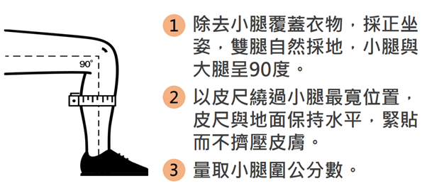
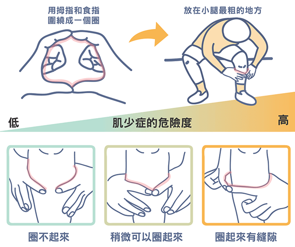
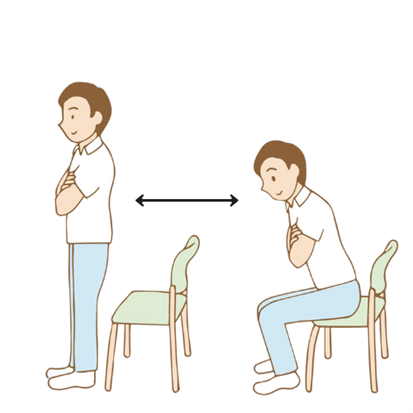

肌少症風險自我檢測
快速評估您的肌力狀態，掌握健康風險
1. 肌少症風險自我評估 (SARC-F)
2. 輔助居家體態檢測
測量小腿圍 (Method 1)
以皮尺繞過小腿最寬位置。50歲以上標準：男性小於 34公分，女性小於 33公分，表示可能肌肉量不足。

示意圖：測量小腿最粗處
指環測試 (Yubi-wakka, Method 2)
用兩隻手的食指和拇指將小腿最粗的部分包圍起來。

示意圖：雙手食指拇指圍繞小腿
30 秒椅子起立測試 (Method 3)
- 步驟1：找一張有靠背的椅子，最好能靠在牆上，並確認椅子不會滑動
- 步驟2：雙手交叉放在胸前，手不可以碰到椅子
- 步驟3：坐在椅子上，然後起身，身體要完全伸直，不可以微彎，完全站直後再坐下
- 步驟4：坐在椅子後「要完整坐下」，不可以只是用屁股輕輕碰到椅子就站起來喔
- 步驟5：30秒內，看自己能完整坐這套動作幾下

示意圖：雙手抱胸，完整起立坐下
次數正常值參考表 (次數低於下表即為風險指標)：
| 年齡 | 男 (次) | 女 (次) |
|---|---|---|
| 60–64 | 14 | 12 |
| 65–69 | 12 | 11 |
| 70–74 | 12 | 10 |
| 75–79 | 11 | 10 |
| 80–84 | 10 | 9 |
| 85–89 | 8 | 8 |
| 90–94 | 7 | 4 |